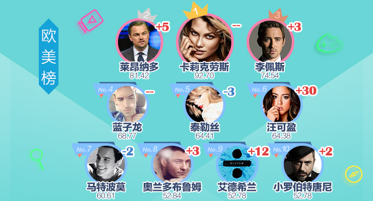

鹿晗迪丽热巴>占据内地榜前两名
明星势力榜第26期新鲜出炉。本期内地榜前三分别是鹿晗、迪丽热巴、林更新。哇哦！“宇文玥”老师高冷了许久终于高冷进前三了！
赵丽颖和窦骁成绩也不错，分别排在第五、第六名。港澳台榜前三分别是陈伟霆、王嘉尔、钟汉良，潘玮柏紧随其后
话说上周看了《中国有嘻哈》的让我看到你们的双手！潘帅你老实说你倒数第二个选手是不是按错灯了！韩国榜和欧美榜则没有太大变化。另外本期新星榜是郑合惠子
韩国榜：李敏镐蝉联第一
韩国演员李敏镐的全新画报集《李敏镐， THE WILD 》将于7月10发行。
李敏镐方面3日表示，记录了李敏镐在DMZ的1年6个月旅程的画报集《李敏镐， THE WILD》即将发行。此次的画报集包含了李敏镐录制纪录片《DMZ，THE WILD 》期间的花絮故事，还将通过随笔和采访的形式展现李敏镐对于DMZ的看法和情感变化。
此次画报集7月10日在韩国发行后，还将在全世界其他地区依次发行。
欧美榜：超模卡莉-克劳斯蝉联第一
据外媒报道，赛琳娜·戈麦斯（Selena Gomez）与歌手The weekend热恋中也不忘好闺蜜泰勒·斯威夫特（Taylor Swift），希望可以安排双重约会。
据一位知情人透露，赛琳娜期待着The weekend的演唱会行程结束，这样他们就可以更好地进行一些正常情侣的节目.
虽然赛琳娜喜欢世界各地不同的风景，在不同的城市一起度过美好的夜晚也很浪漫，但是她更希望和男友像家人一样在一起。